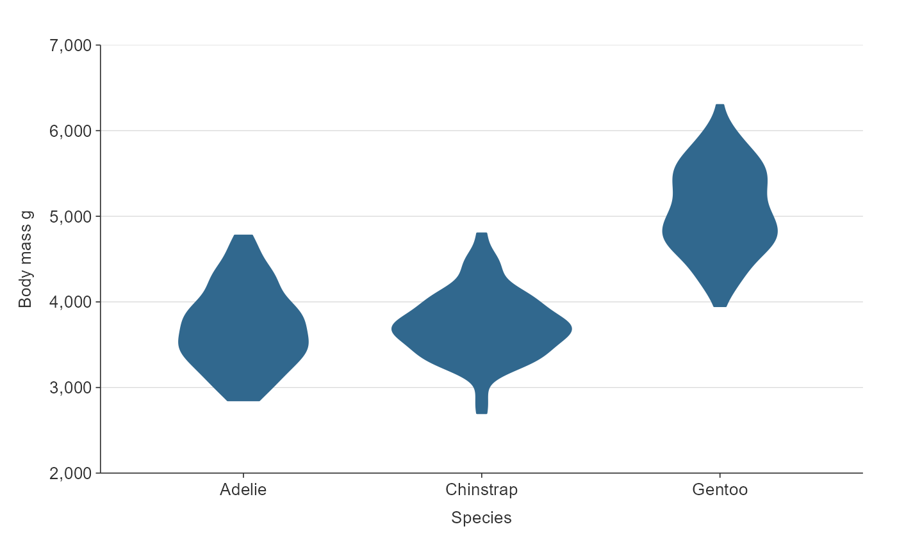

Violin ggplot that is not coloured and not facetted.
Usage
gg_violin(
data,
x_var,
y_var = NULL,
pal = pal_viridis_reorder(1),
alpha_fill = 1,
alpha_line = 1,
size_line = 0.5,
size_width = 0.75,
title = NULL,
title_wrap = 80,
subtitle = NULL,
subtitle_wrap = 80,
x_expand = ggplot2::waiver(),
x_labels = snakecase::to_sentence_case,
x_na_rm = FALSE,
x_rev = FALSE,
x_title = NULL,
x_title_wrap = 50,
y_balance = FALSE,
y_breaks_n = 5,
y_expand = c(0, 0),
y_labels = scales::label_comma(),
y_title = NULL,
y_title_wrap = 50,
y_zero = FALSE,
y_zero_line = NULL,
caption = NULL,
caption_wrap = 80,
theme = gg_theme(gridlines_h = TRUE),
model_scale = "area",
model_bw = "nrd0",
model_adjust = 1,
model_kernel = "gaussian",
model_trim = TRUE,
mobile = FALSE
)Arguments
- data
A data frame in a structure to be transformed to density statistics. Required input.
- x_var
Unquoted categorical variable to be on the x scale (i.e. character, factor, logical). Required input.
- y_var
Generally an unquoted numeric variable to be on the y scale.
- pal
Character vector of hex codes.
- alpha_fill
The opacity of the fill. Defaults to 1.
- alpha_line
The opacity of the outline. Defaults to 1.
- size_line
The size of the outlines of violins. Defaults to 0.5.
- size_width
Width of boxes. Defaults to 0.75.
- title
Title string.
- title_wrap
Number of characters to wrap the title to. Defaults to 75.
- subtitle
Subtitle string.
- subtitle_wrap
Number of characters to wrap the subtitle to. Defaults to 75.
- x_expand
A vector of range expansion constants used to add padding to the x scale, as per the ggplot2 expand argument in ggplot2 scales functions.
- x_labels
A function or named vector to modify x scale labels. If NULL, categorical variable labels are converted to sentence case. Use ggplot2::waiver() to keep x labels untransformed.
- x_na_rm
TRUE or FALSE of whether to include x_var NA values. Defaults to FALSE.
- x_rev
For a categorical x variable, TRUE or FALSE of whether the x variable variable is reversed. Defaults to FALSE.
- x_title
X scale title string. Defaults to NULL, which converts to sentence case with spaces. Use "" if you would like no title.
- x_title_wrap
Number of characters to wrap the x title to. Defaults to 50.
- y_balance
For a numeric y variable, add balance to the y scale so that zero is in the centre of the y scale.
- y_breaks_n
For a numeric or date x variable, the desired number of intervals on the x scale, as calculated by the pretty algorithm. Defaults to 5.
- y_expand
A vector of range expansion constants used to add padding to the y scale, as per the ggplot2 expand argument in ggplot2 scales functions.
- y_labels
A function or named vector to modify y scale labels. Use ggplot2::waiver() to keep y labels untransformed.
- y_title
y scale title string. Defaults to NULL, which converts to sentence case with spaces. Use "" if you would like no title.
- y_title_wrap
Number of characters to wrap the y title to. Defaults to 50.
- y_zero
For a numeric y variable, TRUE or FALSE of whether the minimum of the y scale is zero. Defaults to TRUE.
- y_zero_line
For a numeric y variable, TRUE or FALSE whether to add a zero reference line to the y scale. Defaults to TRUE if there are positive and negative values in y_var. Otherwise defaults to FALSE.
- caption
Caption title string.
- caption_wrap
Number of characters to wrap the caption to. Defaults to 80.
- theme
A ggplot2 theme.
- model_scale
Per ggplot2::geom_violin, if "area" (default), all violins have the same area (before trimming the tails). If "count", areas are scaled proportionally to the number of observations. If "width", all violins have the same maximum width.
- model_bw
The bw argument of the stats::density function. Defaults to "nrd0".
- model_adjust
The adjust argument of the stats::density function. Defaults to 1.
- model_kernel
The kernel argument of the stats::density function. Defaults to "gaussian".
- model_trim
TRUE or FALSE of whether to trim the tails. Defaults to FALSE.
- mobile
Whether the plot is to be displayed on a mobile device. Defaults to FALSE.
Examples
library(simplevis)
library(palmerpenguins)
gg_violin(penguins,
x_var = species,
y_var = body_mass_g)
#> Warning: Removed 2 rows containing non-finite values (stat_ydensity).
